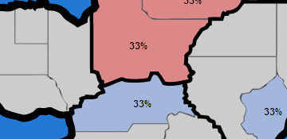
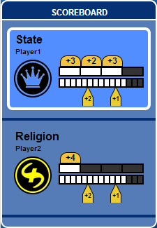

Set-up
Players begin by choosing their Ideology type and given an initial income and an amount of influence placed randomly within the State.
Game Play
Players are shown a map view of the State which is broken down into several Regions. Each Region is further broken into Districts. Each District displays the how much of each Ideology that district is aligned with.
Players will spend their income on a number of different actions available to them. Once all players have finished, the turns are processed simultaneously and a new turn begins. Income is gained each turn based on which Regions and Districts are controlled and a cost is payed to upkeep active Agents.
Actions
- Agents can be recruited and positioned in selected Regions to help spread the word of your ideology to the population.
- Campaigns can be made to further boost your ideology or slander an opponent's ideology.
- Direct attacks can be made to overtly effect your opponent.
- Defensive maneuvers can be made in anticipation of those attacks on your ideology.

End Goal
Any player who controls at least 4 Regions or 15 individual Districts, wins the game. Since both players take their turns simultaneously, it is possible to end the game with a tie.